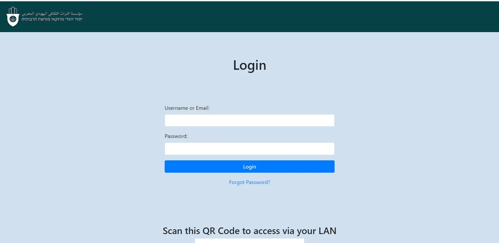
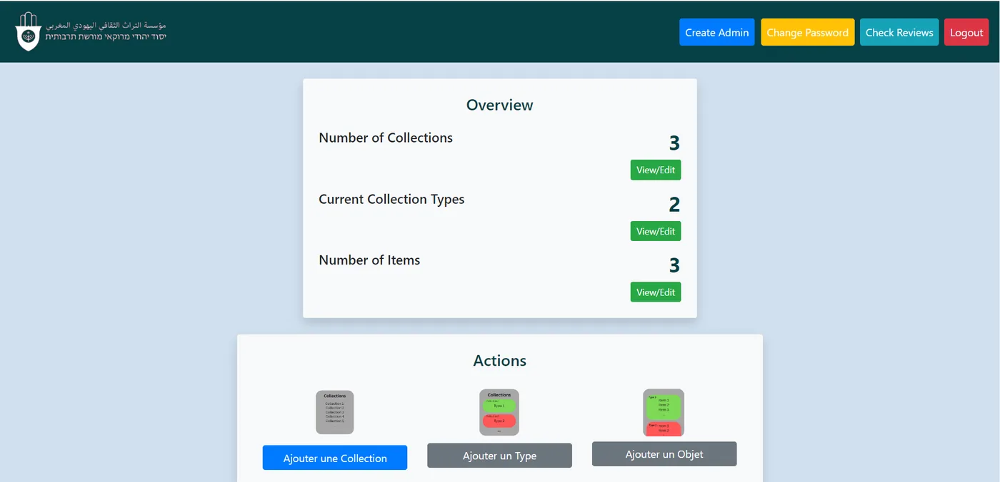
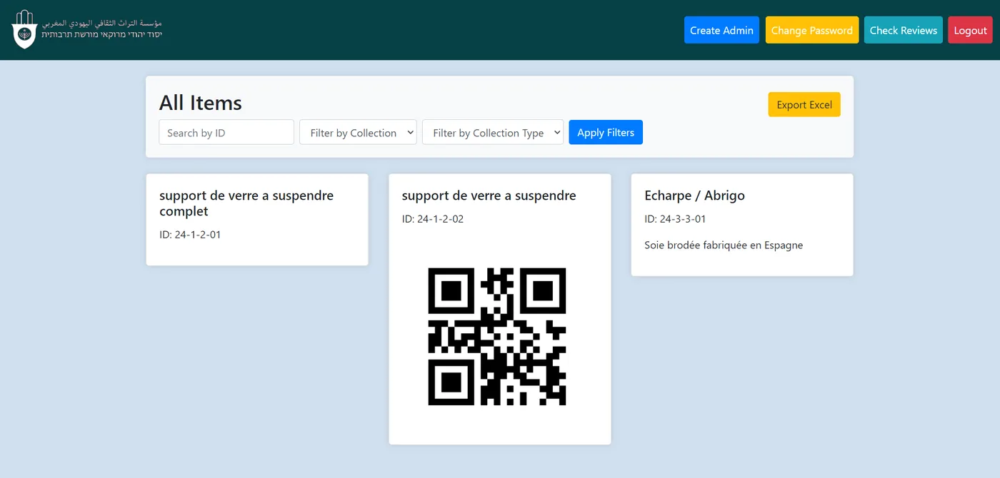
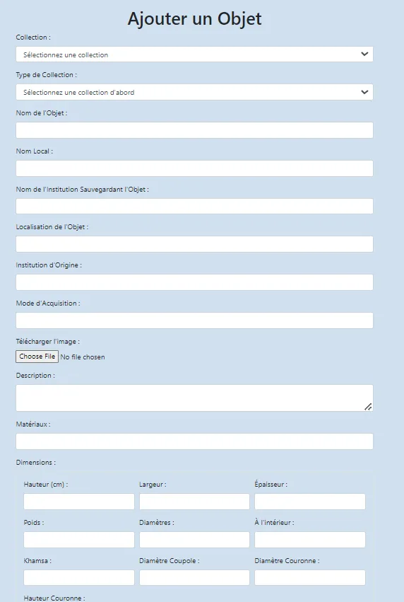
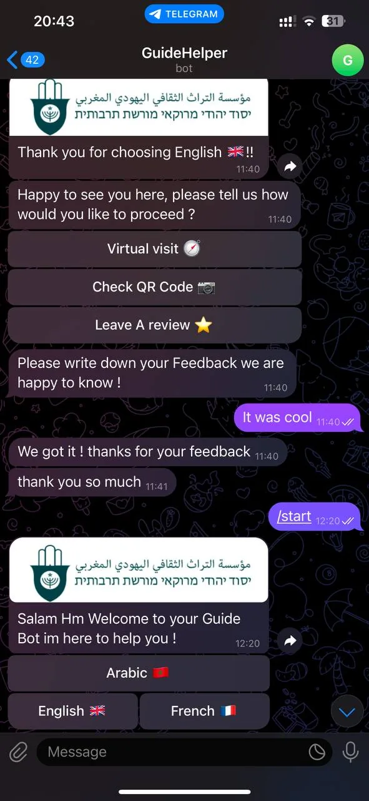
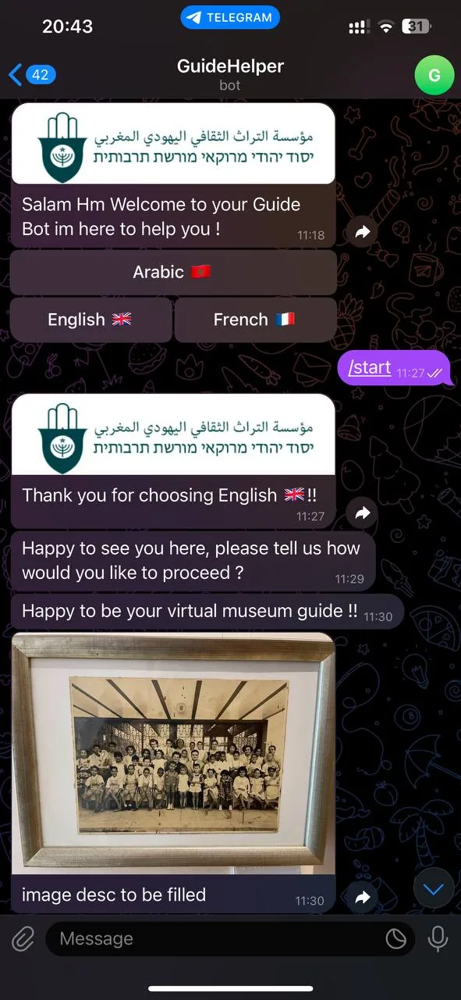
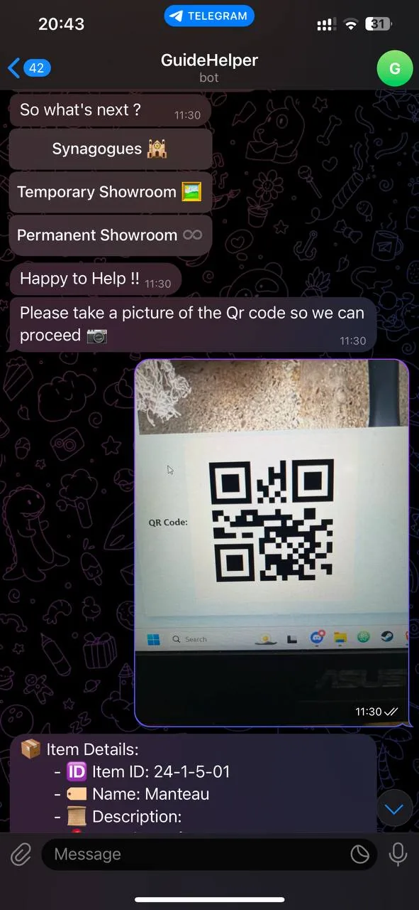
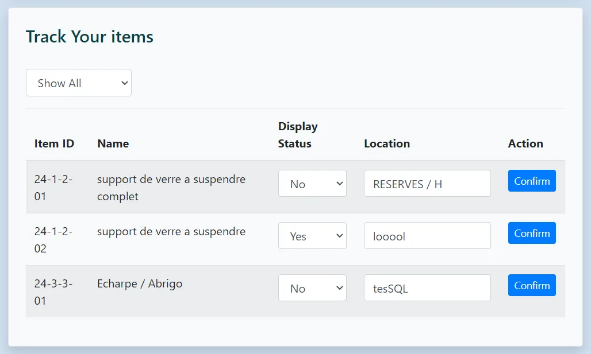

Museum Telegram Bot
A bespoke Telegram bot solution crafted for the Jewish Museum in Casablanca, designed to modernize and streamline the management of valuable collections and exhibits.
Explore FeaturesProject Overview
This project is a comprehensive solution for managing museum collections, specifically tailored for the Jewish Museum in Casablanca. It integrates advanced technologies to handle the following:
- Inventory Management: Keep track of thousands of valuable artifacts with detailed specifications.
- QR Code Integration: Generate unique QR codes for each item, making it easy to retrieve and manage information quickly.
- Real-time Tracking: Track the location of movable artifacts to ensure their security.
- Multilingual Support: Communicate effectively with staff and visitors from different linguistic backgrounds.
- Efficient Interaction: Leverage the Telegram API to provide a seamless and interactive interface.
Due to the nature of this project being developed for a prestigious institution, it cannot be shared publicly in full detail. However, I would be happy to connect and discuss the solution further if you're interested.
Code and Features in Action
Below are some key features and screenshots showcasing the functionality of the Museum Telegram Bot.

Secure login page for authorized museum staff with QR code access via phone.

Dashboard showcasing available options and collections overview.

View all items with the ability to export data as an Excel sheet.

Interface for adding new objects to the collection with detailed metadata.



Interaction with the Telegram bot for real-time updates, reviews, and QR code scanning.

Tracking the movement and location of museum items in real-time.
Confidentiality Notice
This project was developed specifically for the Jewish Museum in Casablanca and involves sensitive information. As such, details about the implementation and source code cannot be shared publicly. However, I would be happy to connect and discuss the challenges, features, and technologies used to build this solution. Feel free to reach out via my contact details below!